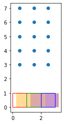
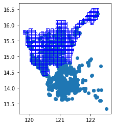

import geopandas as gpd
import matplotlib.pyplot as plt
from shapely.geometry import Point
import geowrangler2.distance_zonal_stats as dzsVector Distance Zonal Stats Tutorial
A basic introduction to Vector Distance Zonal Stats
Basic Usage
Generate area zonal stats for a GeoDataframe containing areas of interest with a vector data source with the nearest distance.
Note
the data geometries can be points, lines or areas with distance computed from the closest points on both the aoi and the data source. Both the aoi and the data source must be projected using a “planar” CRS.
Simple Grid AOIs and Nearby POI/Area Data Example
simple_aoi = gpd.read_file("../data/simple_planar_aoi.geojson")
simple_data = gpd.read_file("../data/simple_planar_data.geojson")simple_point_data = make_point_df(3, 5, offset_x=0.5, offset_y=3.0)Given an aoi (simple_aoi), a sample area data source (simple_data), and a sample point data source
simple_aoi| geometry | |
|---|---|
| 0 | POLYGON ((0.000 0.000, 0.000 1.000, 1.000 1.00... |
| 1 | POLYGON ((1.000 0.000, 1.000 1.000, 2.000 1.00... |
| 2 | POLYGON ((2.000 0.000, 2.000 1.000, 3.000 1.00... |
simple_data| population | internet_speed | geometry | |
|---|---|---|---|
| 0 | 100 | 20.0 | POLYGON ((0.250 0.000, 0.250 1.000, 1.250 1.00... |
| 1 | 200 | 10.0 | POLYGON ((1.250 0.000, 1.250 1.000, 2.250 1.00... |
| 2 | 300 | 5.0 | POLYGON ((2.250 0.000, 2.250 1.000, 3.250 1.00... |
simple_point_data| geometry | population | internet_speed | |
|---|---|---|---|
| 0 | POINT (0.500 3.000) | 100 | 20.0 |
| 1 | POINT (0.500 4.000) | 600 | 120.0 |
| 2 | POINT (0.500 5.000) | 1100 | 220.0 |
| 3 | POINT (0.500 6.000) | 1600 | 320.0 |
| 4 | POINT (0.500 7.000) | 2100 | 420.0 |
| 5 | POINT (1.500 3.000) | 200 | 10.0 |
| 6 | POINT (1.500 4.000) | 700 | 110.0 |
| 7 | POINT (1.500 5.000) | 1200 | 210.0 |
| 8 | POINT (1.500 6.000) | 1700 | 310.0 |
| 9 | POINT (1.500 7.000) | 2200 | 410.0 |
| 10 | POINT (2.500 3.000) | 300 | 5.0 |
| 11 | POINT (2.500 4.000) | 800 | 105.0 |
| 12 | POINT (2.500 5.000) | 1300 | 205.0 |
| 13 | POINT (2.500 6.000) | 1800 | 305.0 |
| 14 | POINT (2.500 7.000) | 2300 | 405.0 |
In order correctly compute distances from the aoi to the data sources, we need to make sure that the aoi, data and point data geodataframes are using a planar CRS (i.e. gdf.crs.is_geographic == False)
simple_aoi.crs<Projected CRS: EPSG:3857>
Name: WGS 84 / Pseudo-Mercator
Axis Info [cartesian]:
- X[east]: Easting (metre)
- Y[north]: Northing (metre)
Area of Use:
- name: World between 85.06°S and 85.06°N.
- bounds: (-180.0, -85.06, 180.0, 85.06)
Coordinate Operation:
- name: Popular Visualisation Pseudo-Mercator
- method: Popular Visualisation Pseudo Mercator
Datum: World Geodetic System 1984 ensemble
- Ellipsoid: WGS 84
- Prime Meridian: Greenwichsimple_data.crs<Projected CRS: EPSG:3857>
Name: WGS 84 / Pseudo-Mercator
Axis Info [cartesian]:
- X[east]: Easting (metre)
- Y[north]: Northing (metre)
Area of Use:
- name: World between 85.06°S and 85.06°N.
- bounds: (-180.0, -85.06, 180.0, 85.06)
Coordinate Operation:
- name: Popular Visualisation Pseudo-Mercator
- method: Popular Visualisation Pseudo Mercator
Datum: World Geodetic System 1984 ensemble
- Ellipsoid: WGS 84
- Prime Meridian: Greenwichsimple_point_data.crs<Projected CRS: EPSG:3857>
Name: WGS 84 / Pseudo-Mercator
Axis Info [cartesian]:
- X[east]: Easting (metre)
- Y[north]: Northing (metre)
Area of Use:
- name: World between 85.06°S and 85.06°N.
- bounds: (-180.0, -85.06, 180.0, 85.06)
Coordinate Operation:
- name: Popular Visualisation Pseudo-Mercator
- method: Popular Visualisation Pseudo Mercator
Datum: World Geodetic System 1984 ensemble
- Ellipsoid: WGS 84
- Prime Meridian: GreenwichWe have an aoi (simple_aoi) and geodataframe containing sample data (simple_data) that overlaps the aoi. We also have simple point data which do not intersect with our AOIs.
ax = plt.axes()
ax = simple_data.plot(
ax=ax, color=["orange", "brown", "purple"], edgecolor="yellow", alpha=0.4
)
ax = simple_aoi.plot(ax=ax, facecolor="none", edgecolor=["r", "g", "b"])
ax = simple_point_data.plot(ax=ax)
The red,green,blue outlines are the 3 regions of interest (aoi) while the orange,brown, purple areas are the data areas.The blue dots are data which do not intersect our AOIs.
results = dzs.create_distance_zonal_stats(
simple_aoi,
simple_point_data,
max_distance=7,
aggregations=[
dict(func="count"),
dict(func="sum", column="population"),
dict(func="mean", column="internet_speed"),
],
)CPU times: user 50.6 ms, sys: 0 ns, total: 50.6 ms
Wall time: 47.8 msThe zonal stats computed for the point data only includes those points nearest to each aoi. The data geometries within nearest distance (within 7.0 m) are the only ones considered.
Note
Setting the max_distance to None or a large value can cause a possible slowdown for large datasets. See this Geopandas reference for more details.
results| geometry | index_count | population_sum | internet_speed_mean | nearest | |
|---|---|---|---|---|---|
| 0 | POLYGON ((0.000 0.000, 0.000 1.000, 1.000 1.00... | 1 | 100 | 20.0 | 2.0 |
| 1 | POLYGON ((1.000 0.000, 1.000 1.000, 2.000 1.00... | 1 | 200 | 10.0 | 2.0 |
| 2 | POLYGON ((2.000 0.000, 2.000 1.000, 3.000 1.00... | 1 | 300 | 5.0 | 2.0 |
Data areas and geometries which overlap the aoi areas have a distance of 0.0 and are always the nearest geometries.
results2 = dzs.create_distance_zonal_stats(
simple_aoi,
simple_data,
max_distance=1,
aggregations=[
dict(func="count"),
dict(func="sum", column="population"),
dict(func="mean", column="internet_speed"),
],
)CPU times: user 33.2 ms, sys: 1.29 ms, total: 34.5 ms
Wall time: 29.5 msresults2| geometry | index_count | population_sum | internet_speed_mean | nearest | |
|---|---|---|---|---|---|
| 0 | POLYGON ((0.000 0.000, 0.000 1.000, 1.000 1.00... | 1 | 100 | 20.0 | 0.0 |
| 1 | POLYGON ((1.000 0.000, 1.000 1.000, 2.000 1.00... | 2 | 300 | 15.0 | 0.0 |
| 2 | POLYGON ((2.000 0.000, 2.000 1.000, 3.000 1.00... | 2 | 500 | 7.5 | 0.0 |
Custom Grids and POIs Example
region3_admin_grids = gpd.read_file("../data/region3_admin_grids.geojson")CPU times: user 97.8 ms, sys: 29.2 ms, total: 127 ms
Wall time: 100 msregion34ncr_osm_pois = gpd.read_file("../data/region34ncr_osm_pois.geojson")CPU times: user 115 ms, sys: 365 µs, total: 115 ms
Wall time: 113 msax = plt.axes()
ax = region34ncr_osm_pois.plot(ax=ax)
ax = region3_admin_grids.plot(ax=ax, facecolor="none", edgecolor="blue")
region3_admin_grids = region3_admin_grids.to_crs("EPSG:3857") # convert to planar
region34ncr_osm_pois = region34ncr_osm_pois.to_crs("EPSG:3857")region34ncr_osm_pois| osm_id | code | fclass | name | BARANGAY_CODE | geometry | |
|---|---|---|---|---|---|---|
| 0 | 311568428 | 2701 | tourist_info | Manila American Cemetery and Memorial Visitor ... | 137602022 | POINT (13475059.129 1636701.151) |
| 1 | 672565496 | 2701 | tourist_info | ecopark paging and first aid station | 137404141 | POINT (13477983.748 1656000.058) |
| 2 | 672565498 | 2701 | tourist_info | Ecopark ticket counter | 137404141 | POINT (13477813.318 1656135.868) |
| 3 | 1585389544 | 2701 | tourist_info | Area Formerly Occupied by Fort Bonifacio Museum | 137602021 | POINT (13476156.594 1637474.593) |
| 4 | 1834855424 | 2701 | tourist_info | Lotto Booth | 137601020 | POINT (13468786.053 1622805.175) |
| ... | ... | ... | ... | ... | ... | ... |
| 2829 | 1282790636 | 2723 | monument | Rizal Monument | 030808004 | POINT (13387876.843 1652143.344) |
| 2830 | 1430752967 | 2723 | monument | Rizal Monument | 034903092 | POINT (13464327.852 1743609.163) |
| 2831 | 2280492117 | 2723 | monument | Rizal Monument | 031421037 | POINT (13467118.142 1705384.453) |
| 2832 | 4898774223 | 2723 | monument | Rizal Monument | 035414009 | POINT (13434387.128 1685457.796) |
| 2833 | 3087522557 | 2724 | memorial | Rizal Monument | 031410015 | POINT (13448861.946 1672777.772) |
2834 rows × 6 columns
results3 = dzs.create_distance_zonal_stats(
region3_admin_grids,
region34ncr_osm_pois,
max_distance=10_000, # within 10km
aggregations=[dict(func="count", output="pois_count", fillna=[True])],
)CPU times: user 64.3 ms, sys: 6.26 ms, total: 70.5 ms
Wall time: 67.8 mslen(results3[results3.pois_count == 0.0])165results3| x | y | geometry | pois_count | nearest | |
|---|---|---|---|---|---|
| 0 | 0 | 30 | POLYGON ((13334497.956 1771012.807, 13339497.9... | 1.0 | 8849.591855 |
| 1 | 0 | 31 | POLYGON ((13334497.956 1776012.807, 13339497.9... | 1.0 | 8844.448848 |
| 2 | 0 | 32 | POLYGON ((13334497.956 1781012.807, 13339497.9... | 0.0 | NaN |
| 3 | 1 | 30 | POLYGON ((13339497.956 1771012.807, 13344497.9... | 1.0 | 3856.266007 |
| 4 | 1 | 32 | POLYGON ((13339497.956 1781012.807, 13344497.9... | 1.0 | 6070.762498 |
| ... | ... | ... | ... | ... | ... |
| 1069 | 54 | 44 | POLYGON ((13604497.956 1841012.807, 13609497.9... | 1.0 | 674.134053 |
| 1070 | 54 | 45 | POLYGON ((13604497.956 1846012.807, 13609497.9... | 2.0 | 0.000000 |
| 1071 | 54 | 46 | POLYGON ((13604497.956 1851012.807, 13609497.9... | 1.0 | 4237.158313 |
| 1072 | 54 | 47 | POLYGON ((13604497.956 1856012.807, 13609497.9... | 1.0 | 9237.158313 |
| 1073 | 54 | 48 | POLYGON ((13604497.956 1861012.807, 13609497.9... | 0.0 | NaN |
1074 rows × 5 columns